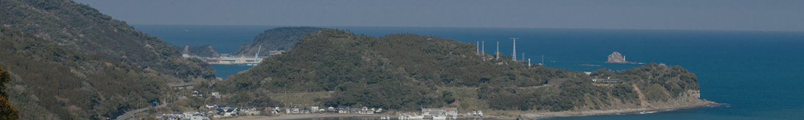
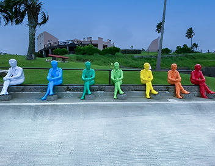
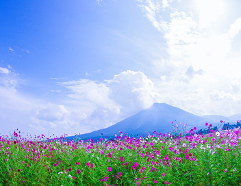
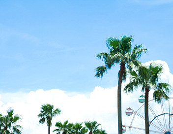
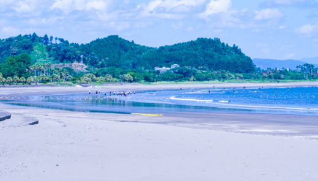
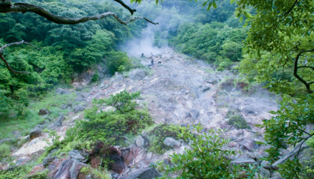
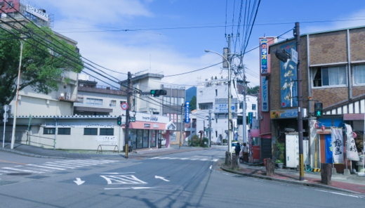
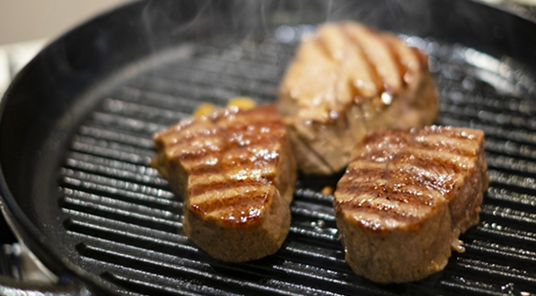
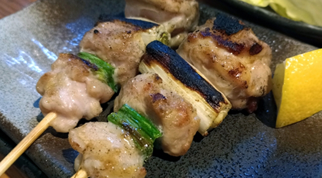

物件の周囲の魅力
宮崎市の観光スポット
-

サンメッセ日南
-

生駒高原
-

こどものくに
近隣の魅力
-

マリンスポーツが楽しめる
透明度の高い宮崎の海でカヤックやSUP（スタンドアップパドルボード）を楽しめば、まるで海の上をお散歩しているような気分になれます。波が穏やかなエリアも多いため、小さなお子さまから大人まで安心して挑戦できるのも魅力のひとつです。
透き通る水面の下には、美しい魚たちが泳ぎ、時折海ガメに出会えることも。ゆったりとパドルを漕ぎながら、心地よいひとときを過ごしてみませんか？ -

温泉がたくさんある
宮崎県には青島温泉やえびの高原温泉などがあり、それぞれ異なる魅力があります。青島温泉は海に近く、潮風を感じながら温泉に浸かれるのが魅力。
一方、えびの高原温泉は標高の高い場所にあり、四季折々の美しい景色を眺めながらゆったりとくつろげます。どちらも泉質が良く、日頃の疲れを癒すのにぴったりのスポットです。家族でのんびり過ごしながら、自然と温泉の恵みを満喫してみませんか？ -

買い物に便利である
地元の食材や特産品が揃うショッピングスポットが充実しており、新鮮な食材やこだわりの逸品を手に入れることができます。
観光客はもちろん、地元に住むファミリーにとっても、毎日の食卓を彩る旬の野菜や果物、宮崎ならではの美味しい食材を見つけるのは楽しみのひとつ。
スーパーでは手に入らない、昔ながらの製法で作られた特産品を扱うお店も多く、普段の食事をちょっと特別なものにしてくれる魅力があります。
近隣のグルメ情報
-

幸加園
幸加園は初めての宮崎牛専門店です。自家製のタレは味噌ベースで、マンゴーが加えられており、まろやかで奥深い味わいが楽しめます。
※写真はイメージです。宮崎県宮崎市江平西１-1-1
-

炭火串処そうげん
炭火串処そうげんは創業16年の人気の居酒屋です。中でも焼き鳥が特に好評です。炭火で焼かれた焼き鳥は香ばしく、ジューシーです。
※写真はイメージです。宮崎県宮崎市大工町2-154
CONTACT
賃貸物件に関するご質問承ります。